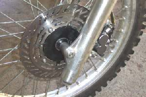
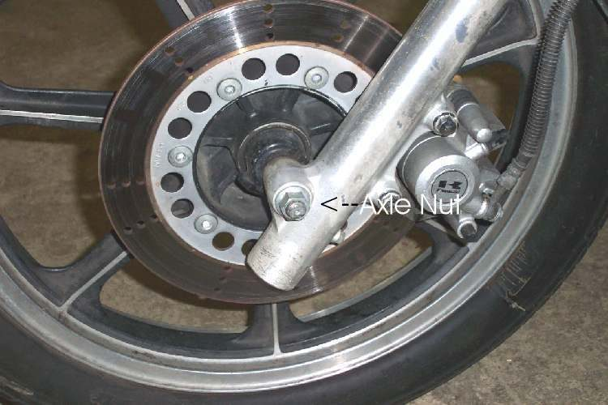
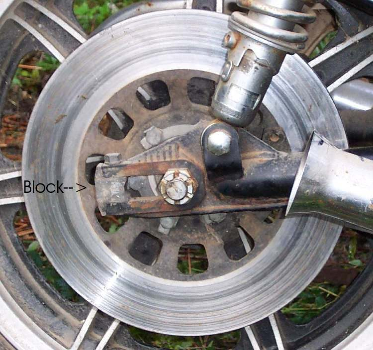
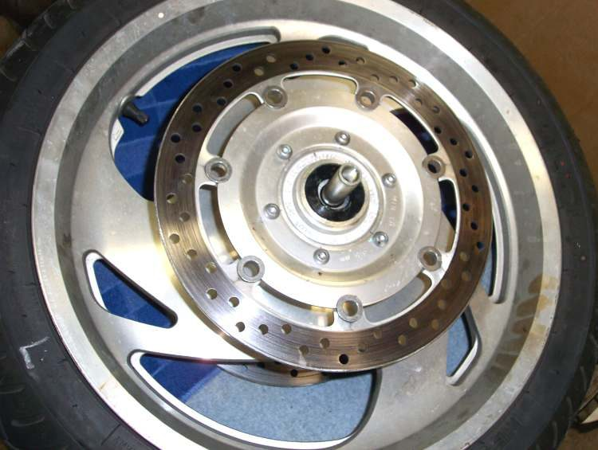
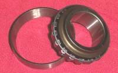
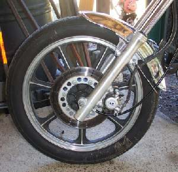

When you brake, the lever or pedal pulses against your hand or foot, or the front end shakes, in time with the wheel turning. Usually the disc has uneven thickness or runout (it wobbles side to side), often from overheating or pad material stuck in patches. A loose wheel bearing, loose steering head bearings or an out-of-round drum can feel the same.
Is it safe to ride?
Ride with care if the brake still stops the bike well. If the shaking is strong, the front clunks, or braking is weaker, do not ride until checked.
Quick checks first
- Is it the front brake, the rear, or both?
- Spin the wheel slowly with the bike on its stand: does the pad rub at one point each turn?
- Look at the disc for dark patches, blue areas or a loose bolt.
- Hold the front brake and rock the bike: any clunk?
Diagnose it step by step
1Does the pulse come from a drum brake?
- Yes: the drum may be out of round or have a hard spot. Check it during Service a drum brake; a damaged drum means a new hub.
- No: go to step 2.
2Are all disc bolts tight and the disc free of cracks?
- No: a loose or cracked disc is dangerous. Do not ride. Tighten to the model torque or replace the disc.
- Yes: go to step 3.
3Does the wheel move sideways on the axle, or feel rough when spun?
- Yes: worn wheel bearings let the disc move. Check wheel bearings and see Wheel moves sideways on the axle.
- No: go to step 4.
4With the front brake on, is there a clunk at the steering head when you rock the bike?
- Yes: go to Clunk from the front when braking.
- No: go to step 5.
5Measure disc runout and thickness. Is runout over the limit (K-Light 125: 0.15 mm), or does thickness vary round the disc?
- Yes: replace the disc and fit new pads. Discs are not straightened. Check a brake disc.
- No: go to step 6.
6Are there dark patches on the disc (pad material stuck on), or are the pads glazed?
- Yes: clean the disc with brake cleaner, fit new pads and bed them in carefully with several moderate stops: Replace disc brake pads.
- No: check the wheel rim for runout with Check a wheel for runout and the tyre for flat spots.
Causes, most likely first
| Cause | How to confirm | Fix |
|---|---|---|
| Pad deposits on disc | Dark patches; pulse after hard use | Clean disc, new pads, bed in |
| Disc runout or thickness variation | Dial gauge reading over limit | Replace disc and pads |
| Loose disc bolts | Bolts move | Tighten to model torque |
| Worn wheel bearings | Wheel rocks on axle | Check wheel bearings |
| Loose steering head bearings | Clunk at head tube | Check the steering head bearings |
| Out-of-round drum | Pulse from drum brake | Service a drum brake |
Reference values (K-Light 125)
| Item | Value | Source |
|---|---|---|
| Disc runout limit, front and rear | 0.15 mm | K-Light 125 manual, PDF p. 112 |